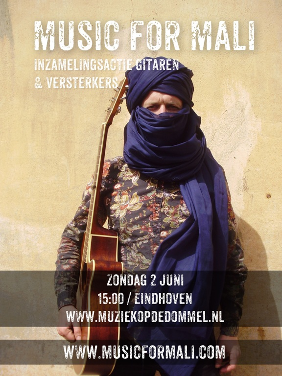

Geef voor en om Mali tijdens Muziek op de Dommel
Mali is het armste land ter wereld, maar misschien wel het rijkste wat muziek betreft. Muziek is als zuurstof voor haar inwoners. Een jaar geleden grepen extremisten de macht in Noord Mali: Muziek werd verboden, studio's, radiostations en instrumenten waaronder veel gitaren werden kapot geslagen en in brand gestoken. Muzikanten werden wreed mishandeld en verdreven. Onlangs zijn grote delen van Mali weer bevrijd, maar niet zonder verlies.
Music for Mali is een inzamelingsactie bedoeld om deze onderdrukte muzikanten weer aan instrumenten te helpen. Een eerste inzamelingsactie in Paradiso heeft een mooi resultaat opgeleverd, de actie wordt nu voort gezet tijdens Muziek op de Dommel in Eindhoven.
Op 1 en 2 juni hopen wij zoveel mogelijk gitaren en toebehoren in te zamelen voor Music for Mali. Naast gitaren zijn ook allerlei toebehoren zeer welkom: tassen, versterkers, kabels, snaren, klein slagwerk, etc. Gitaren met kleine defecten zijn geen probleem ; de instrumenten worden nagekeken en gerepareerd voor ze naar Mali afreizen.
Met uw hulp kunnen we muzikanten in Mali weer laten ademen. Kom langs op 1 of 2 juni en geef voor, en om Mali! Je krijgt er muziek voor terug!
Voor meer informatie over Music for Mali, zie: www.musicformali.com
